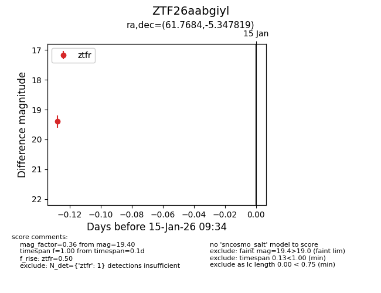
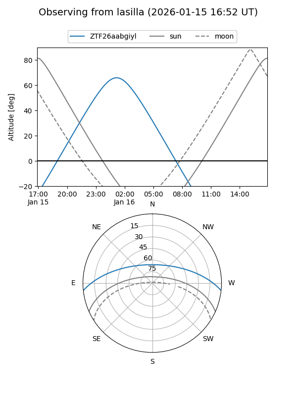
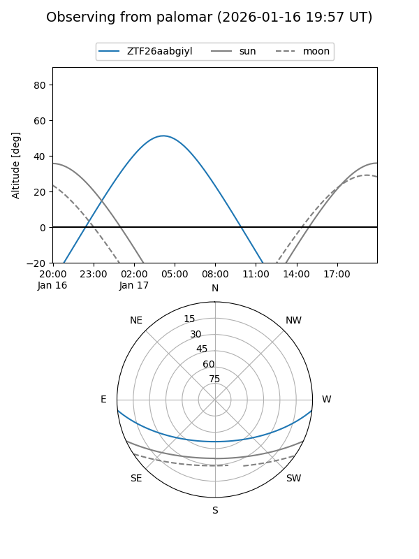

ZTF26aabgiyl
Target ZTF26aabgiyl at 2026-01-15 09:35
Aliases and brokers:
FINK: link
Lasair: link
ALeRCE: link
alt names
ZTF26aabgiyl (ztf,fink_ztf)
Coordinates:
equatorial (ra, dec) = 61.7684,-5.34782
equatorial (HMS+DMS) = 04:07:04.43,-05:20:52.15
galactic (l, b) = (196.9124,-38.67510)
Flags:
Photometry:
last ztfr=19.40
1 ztfr detections
Lightcurve

Visibility


Additional plots